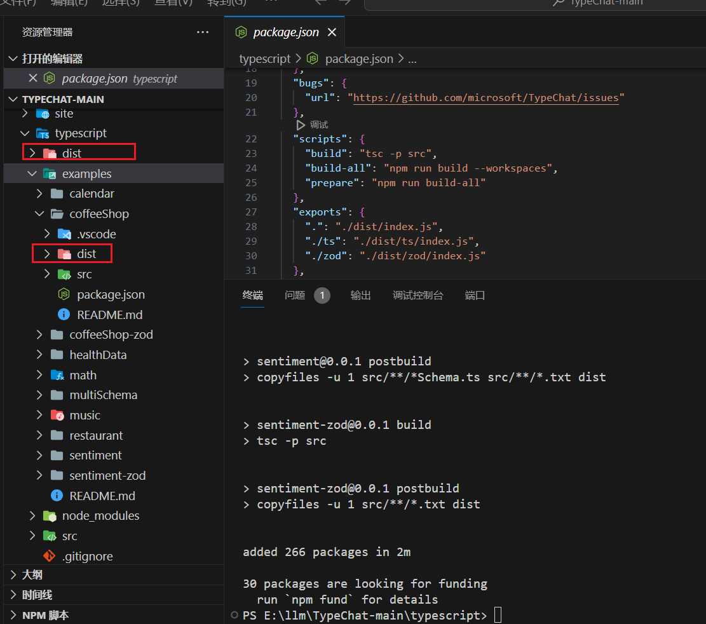

TypeChat
GitHub官网介绍：TypeChat is a library that makes it easy to build natural language interfaces using types.
写在前面
先聊点其他的吧。我们之前确实有类似的需求：从一段文字中抽取特定字段（属性）的信息，组成一个JSON对象。举个例子吧：
从下方<content>内的文本中提取出以下信息： 姓名,性别,年龄,地址 。
结果输出JSON结构，无法提取的内容，使用null来表示。
<content>
大家好，我是来自河北省唐山市的张三，大家都能看出来是吧，我是个男的，今年18岁了，非常喜欢听音乐，爱打乒乓球、羽毛球等，谢谢大家
</content>
上面的内容是我们弄的提示词，也修改过好几版，这里就不一一列举了。我们希望得到的回答如下（至少得包含）：
{
"name": "张三",
"gender": "男",
"age": 18,
"address": "河北省唐山市"
}
// 或者
{
"姓名": "张三",
"性别": "男",
"年龄": 18,
"地址": "河北省唐山市"
}
针对这里的测试，
OPENAI_API
如何使用
有两种使用方式：一是 GitHub 下载源码，自己编译；二是作为类库，直接使用
源码方式
下载并编译
下载源码有个好处就是其中包含了几个示例，这里项目的位置如下：

在项目的

创建 .env文件
这里配置
OPENAI_MODEL=chatglm3-6b
OPENAI_API_KEY=null
OPENAI_ENDPOINT=http://IP:Port/v1/chat/completions
运行示例项目 coffeeShop
将上面的
# 这里需要你手动输入“提示词”
node ./dist/main.js
# 这里会遍历 input.txt 文件中的问题
node ./dist/main.js ./dist/input.txt
注意：这里开始测试的时候会提示一些JSON的问题，所以打印了一下API的返回结果。
类库方式
在自己写示例之前，看了一下上面示例项目 coffeeShop 的源码，大概了解了一下实现过程，如下：
这种方式使用起来就比较熟悉了，创建一个前端项目，直接
import { createJsonTranslator, createLanguageModel } from "typechat";
const model = createLanguageModel({
OPENAI_MODEL: "chatglm3-6b",
OPENAI_API_KEY: "null",
OPENAI_ENDPOINT: "http://IP地址:端口/v1/chat/completions"
});
const translator = createJsonTranslator(
model,
`
interface Student {
姓名: string | null;
性别: string | null;
年龄: number | null;
地址: string | null;
}
`,
"Student"
);
let prompt = translator.createRequestPrompt("大家好，我是来自河北省唐山市的张三，大家都能看出来是吧，我是个男的，今年18岁了，非常喜欢听音乐，爱打乒乓球、羽毛球等，谢谢大家");
console.log("--------------------------------------------------------- 提示词：");
console.log(prompt);
const response = await model.complete(prompt);
console.log("--------------------------------------------------------- 返回结果：");
console.log(response);
感觉这里最重要的就是
// 下方的代码位置：typescript\src\typechat.ts
function createRequestPrompt(request: string) {
return `You are a service that translates user requests into JSON objects of type "${validator.getTypeName()}" according to the following TypeScript definitions:\n` +
`\`\`\`\n${validator.getSchemaText()}\`\`\`\n` +
`The following is a user request:\n` +
`"""\n${request}\n"""\n` +
`The following is the user request translated into a JSON object with 2 spaces of indentation and no properties with the value undefined:\n`;
}
后面在慢慢看看项目的其他内容